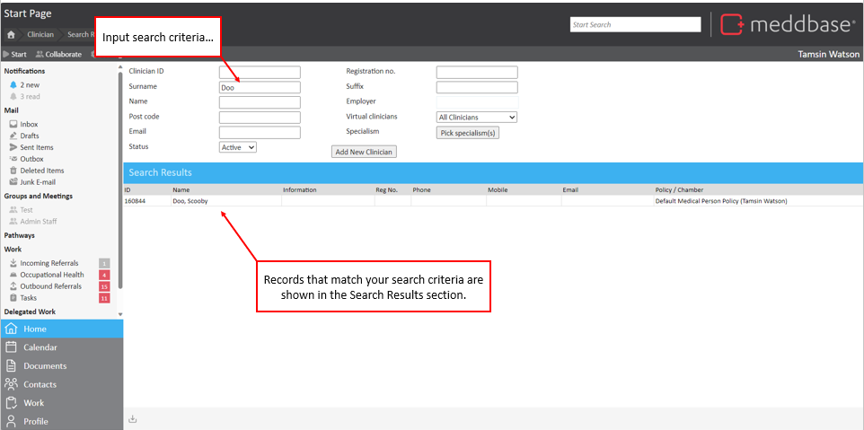
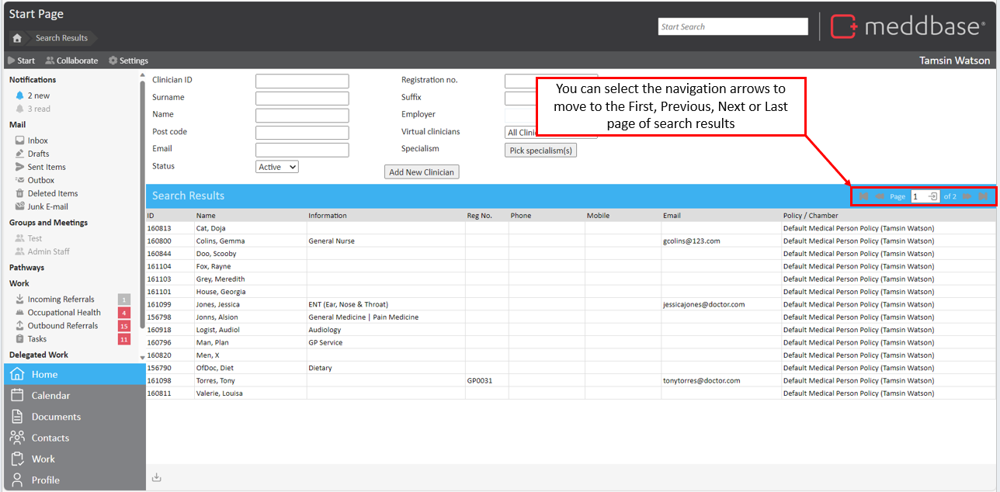
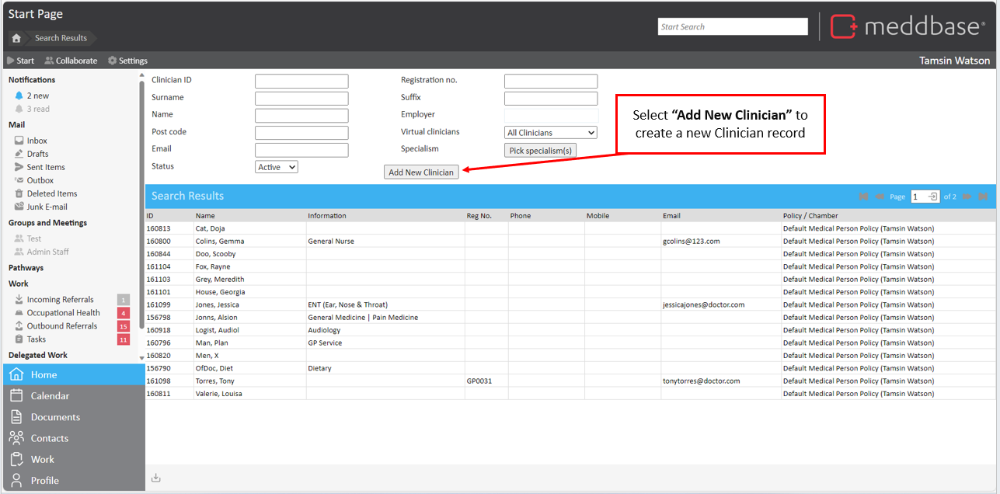
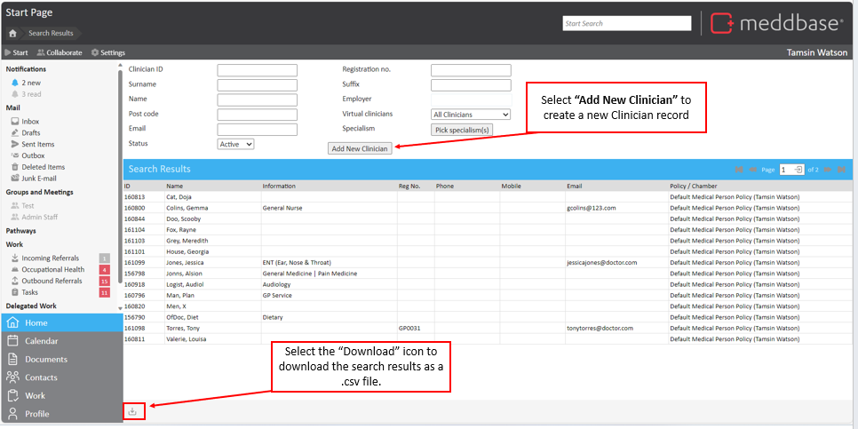

) located near the bottom left corner of the 'Search Results' page.
) located near the bottom left corner of the 'Search Results' page.This article aims to:
To find a clinician and open the record:

Once a user begins filling information into a field, Meddbase will begin searching. This way you may not even have to enter a clinician’s full name to reach the result you require, making searching efficient and getting you where you need to be fast.
Searches for a clinician can be defined by the following criteria:
| Search Criteria | Description |
| Clinician ID | Clinician's ID |
| Surname | Clinician's surname |
| Name | Clinician's first name |
| Postcode | Clinician's postcode |
| Clinician's email | |
| Status | Clinician's status (active or deleted) |
| Registration no. | Clinician's registration number |
| Suffix | Clinician's name suffix |
| Employer | Clinician's employer |
| Virtual Clinicians | Option to choose 'All Clinicians', 'Virtual Clinicians' or 'Real Clinicians' |
| Specialism | Option to choose specialism of clinician |
The following columns are displayed in the search results.
| Search Result Column | Description |
| ID | Clinician's ID number |
| Name | Clinician's full name (Surname, Name) |
| Information | Clinician information |
| Reg No. | Clinician's registration number |
| Phone | Clinician's phone number |
| Mobile | Clinician's mobile number |
| Clinician's email | |
| Policy / Chamber | The security policy applied to the Clinician record |
On the Find a Clinician page, there are some additional features. These are summarised below.
Where there are more records returned in a search than can be displayed on one page of results, you are provided with navigation arrows in the Search Results bar. These allow you to go to the First, Previous, Next or Last page of the search results.

If during a clinician search, you find that the patient does not exist within your system, you may add the clinician by clicking the ‘Add New Clinician’ button.

As with many lists within Meddbase you may export a clinician search at any given time by clicking the export to CSV button () located near the bottom left corner of the 'Search Results' page.
